Managing Import in OMERO5
Paris 2014
Mark Carroll, Colin Blackburn & Josh Moore
Outline
- Introduction to OMERO 5
- Advanced import
- Advanced data output
- Advanced administration
- Discussion
Introduction to OMERO 5
- Changes in OMERO 5
- ManagedRepository
- Filesets
- Upgrades
Changes in OMERO 5
OMERO 5 introduces improvements to image import that preserve your original data and reduce data duplication.
We begin by outlining the change that came with version 5.0.0: OMERO.fs.
OMERO 5 Import
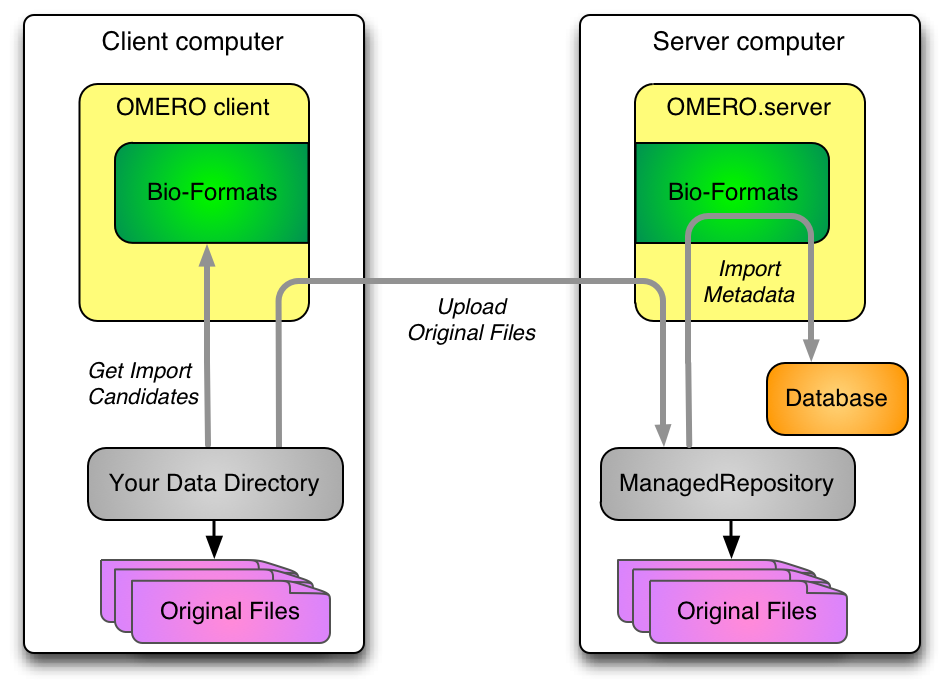OMERO 5 Data out
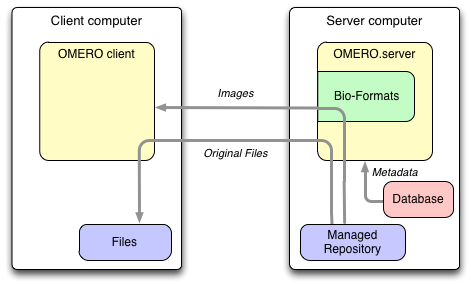OMERO 4 Import
- client sends image planes over the network
- stored as
Pixels
, an internal uncompressed format - additionally, original
archived
files can be stored - though not for HCS plates
- pyramids stored for all large images
OMERO 5 Import
- client uploads only original data
- including HCS plates, everything is
archived
- server does not store Pixels files
- pyramids stored for few large images
- only those without subresolutions in file
OMERO 5 Data out
- pixels provided directly from original files
- server-side Bio-Formats
- original files always available for download
- including HCS plates
ManagedRepository
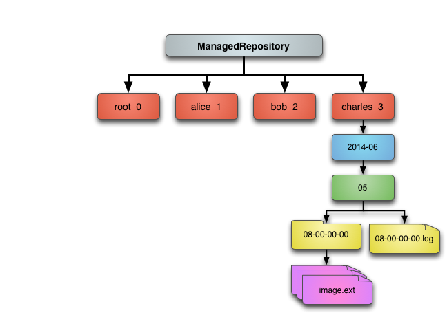ManagedRepository
- server stores and reads original data
- OMERO acts as repository of original data
- without Pixels files, less data duplication
- original data visible in server filesystem
- where filesets live
- each Fileset in its own subdirectory
Filesets: One to one
Filesets: One to many
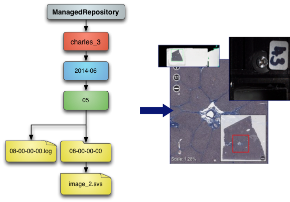Filesets: Many to many
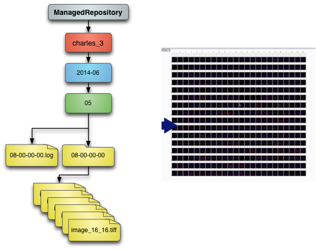Filesets: Summary
- a set of related files
- Bio-Formats must read them together
- a set of images, arising from those files
- may be just one file and one image
- Project/Dataset, Screen/Plate hierarchy remains
Migrating to FS
- new OMERO users should use OMERO 5
- upgrade scripts provided from OMERO 4
pre-FS
images still Pixels, not in Filesetsynthetic
images also not in Fileset- for instance: projections, kymographs
Advanced import
- In-place import
- DropBox import
- Polling & cron job import
In-place import
- client transfers original data to ManagedRepository
- uploads - deafult as already outlined
- creates soft links
- creates hard links
- creates hard links followed by delete of source files
- employs user-defined transfer mode
- server-side import as previously outlined
- Potential for even less data duplication
In-place import: ln_s
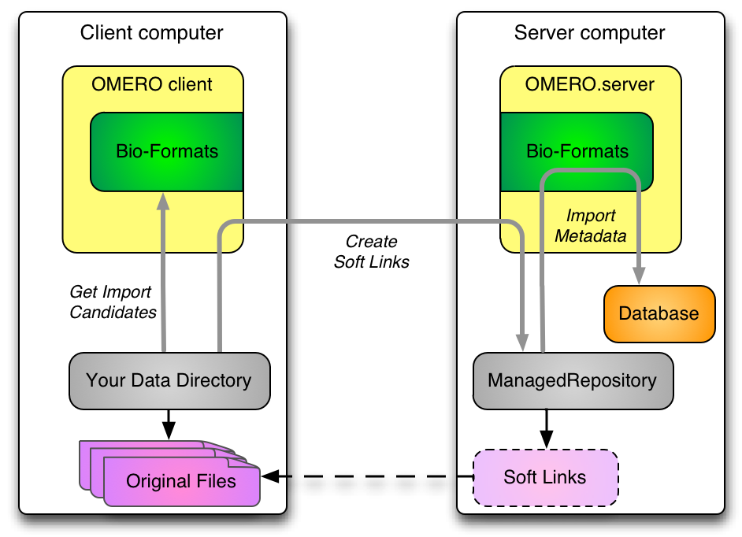In-place import: ln
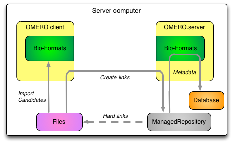In-place import: ln_rm
In-place import: ln_rm
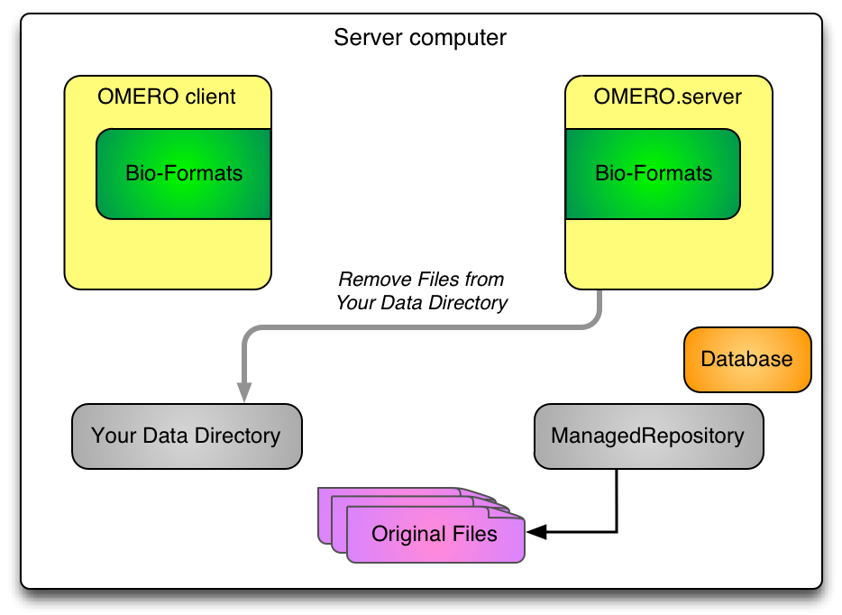DropBox
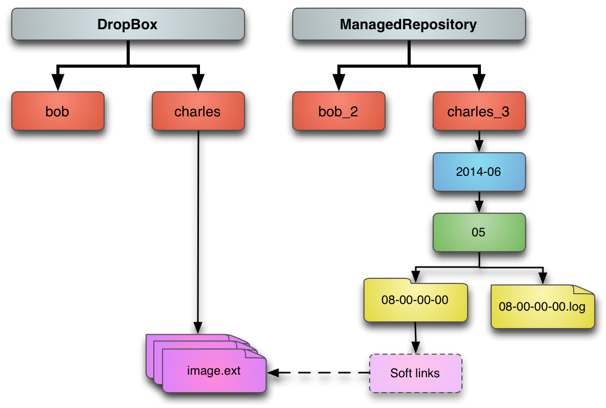DropBox
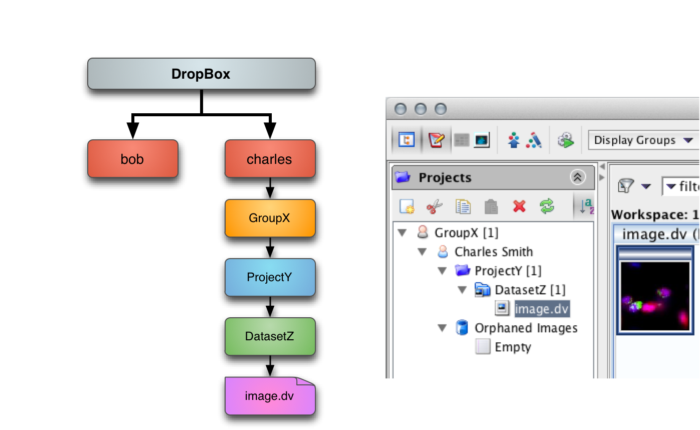DropBox import
- DropBox can be configured to use in-place import
- This can remove server-side duplication
- Future work
- More configuration
- Container details captured in paths
Polling & cron job import
- Extending DropBox to run in polling mode
- This can also be configure for a cron job
Advanced repository layouts
- Templates
- Samba & ldap mapping
- Quotas
- Adding disks
Finding your ManagedRepository
$ bin/omero fs repos
|
# | Id | UUID | Type | Path
---+------+--------------------------------------+---------+----------------------------------
0 | 1 | c8db8f5c-b6ba-472f-b0d5-3dac4f31be66 | Public | /home/data/ome2
1 | 2 | ScriptRepo | Script | /opt/ome2/dist/lib/scripts
2 | 3 | c4df3508-cffe-4bf2-a1c8-b3c1395f737f | Managed | /home/data/ome2/ManagedRepository
(3 rows)
|
Template configuration
# Template for FS managed repository paths.
# Allowable elements are:
# %user% bob
# %userId% 4
# %group% bobLab
# %groupId% 3
# %year% 2011
# %month% 01
# %monthname% january
# %day% 01
# %time% 15-13-54.014
# / path separator
#
# %user%_%userId%/ must come first, and the path must be unique per fileset
# to prevent upload conflicts, which is why %time% includes milliseconds.
#
# The template path is created below <omero.managed.dir>,
# e.g. /OMERO/ManagedRepository/<omero.fs.repo.path>/
omero.fs.repo.path=%user%_%userId%/%year%-%month%/%day%/%time%
|
Templates

Templates

Templates

Samba & ldap mapping
- /OMERO/ManagedRepository can be mapped via Samba
- Safest for read-only access
- Best if per-user mapping can be applied
Samba
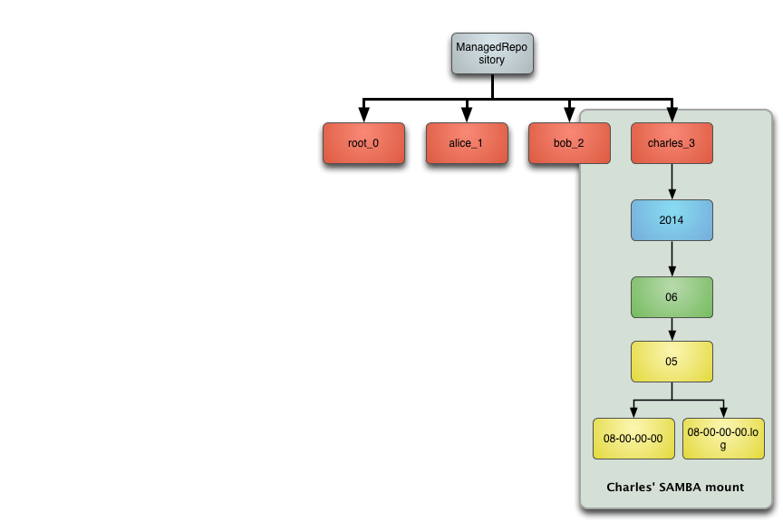Quotas
Quotas
By adding "%groupId%" at the top of the template, getting diskspace usage per group should be easier.
Adding disks
Adding disks
Adding other disks, should be as simple as adding a mount-point under /OMERO/ManagedRepository
Other advanced tasks
- pre-FS -> FS migration
- Java-less import
pre-FS -> FS migration
- OMERO4 and before allowed archiving original files
bin/omero fs images --archived- Preparing user script to help conversion
- Limitations
Java-less import
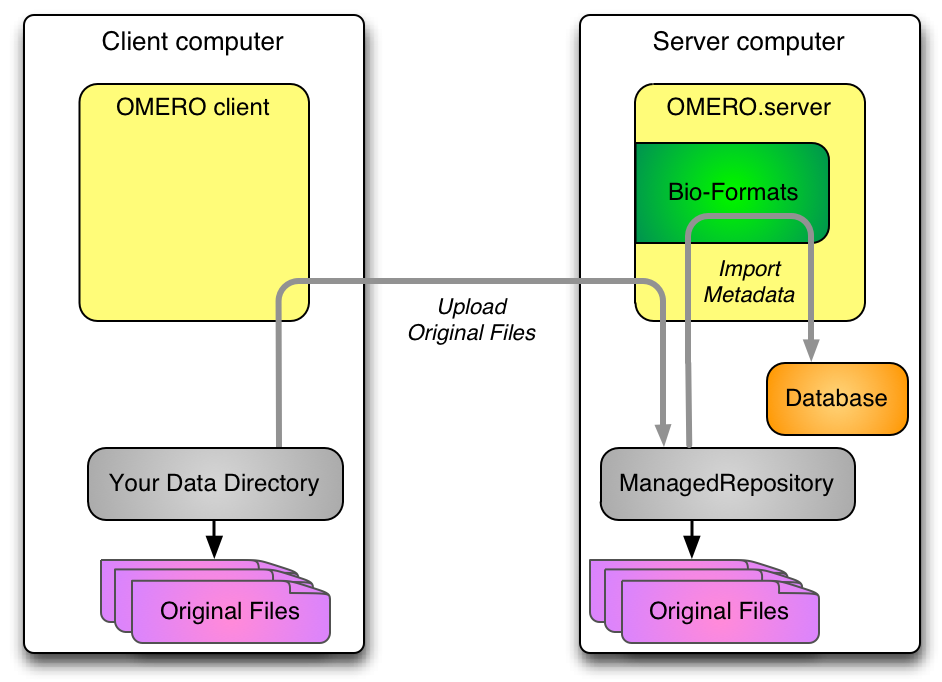Discussion
- Questions?
- Other import scenarios
- Feedback
Any Feedback?
- We welcome questions and comments on FS.
- What further work on FS would be most useful?
- For more detail of FS see last year's workshop.